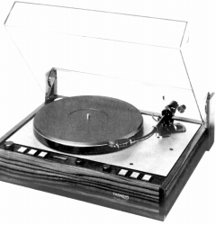
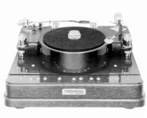
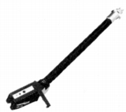
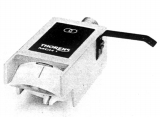
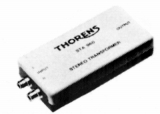
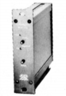
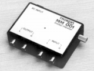

THORENS（トーレンス）
フローティングサスペンション・ベルトドライブのアナログディスクプレーヤーで知られるスイスのブランド。1960年代にEMT傘下となった関係で、ドイツブランドに分類する資料もある。海外製アナログディスクプレイヤーのブランドでは、もっとも有名なものの一つ。その歴史は19世紀のオルゴール生産までさかのぼり、1983年に創立100周年を迎えた老舗メーカである。
主力はあくまでもプレイヤーであり、プレイヤーの製品数に比べると、数は少ないがカートリッジやトランス・ヘッドアンプなどもある。カートリッジは資本的な関係のあるEMTと関わりが深い。
代理店は1973年頃は三井物産、75年頃は山水電気、79年頃はパイオニアエンタープライズ、81年以降はノアであったが、2012年バラッドに変わった。


(左 TD126MK�V 右 Prestige 1980年代以降はSMEのアームを装備したモデルが多い。TD126MK�Vも3010Rを装備）
�T.カートリッジ
最初に登場したのは同社のプレイヤーの自社製アーム(TPシリーズ）用のヘッドチューブ一体型であった。ついで同社と資本関係があるEMT規格のアーム用のMCH-1及び一般規格のコネクターのMCH-2が登場した。MCH-1及び2はEMTのTSD15のバリエーションモデル。

(TMC63)
(MCH-1)�U.トランス・ヘッドアンプ・イコライザーアンプ

(STA960)
(PPA990)(ヘッドアンプ） PPA990 PPA-990New

(MM-001)(イコライザーアンプ) MM-001
�V.その他
アーム型クリーナーとスタビライザーがある。